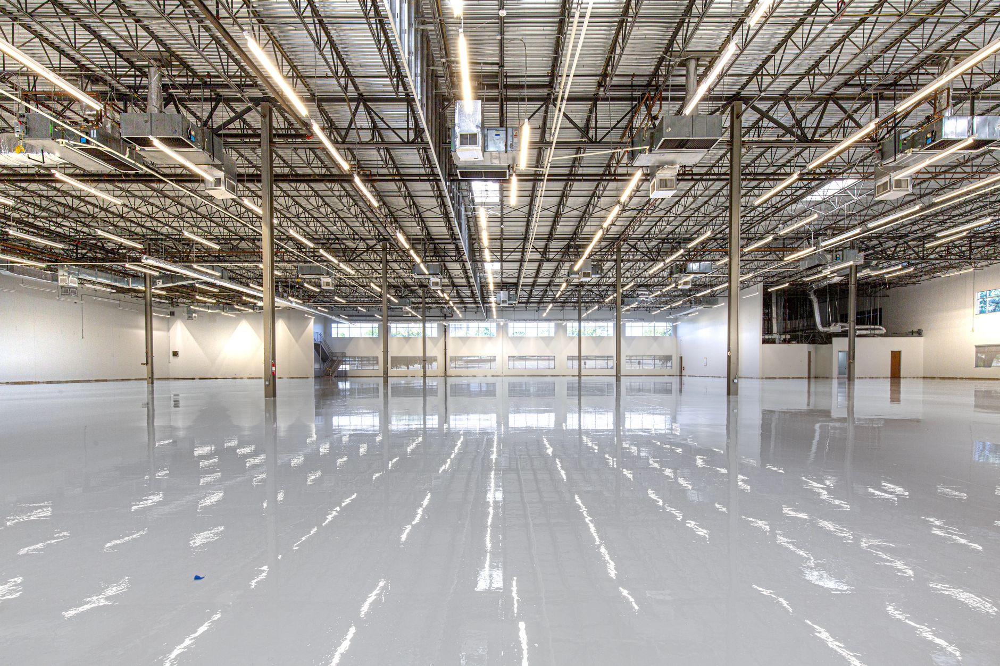
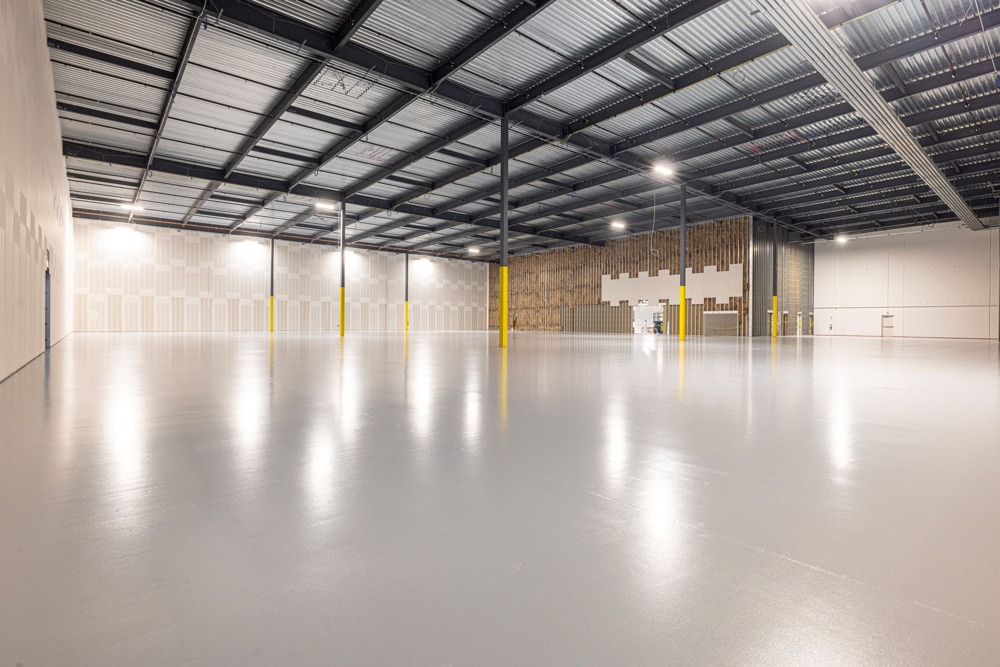
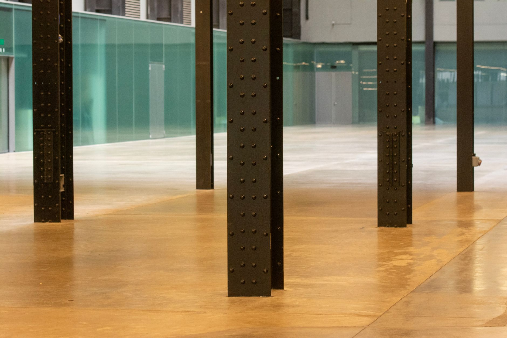
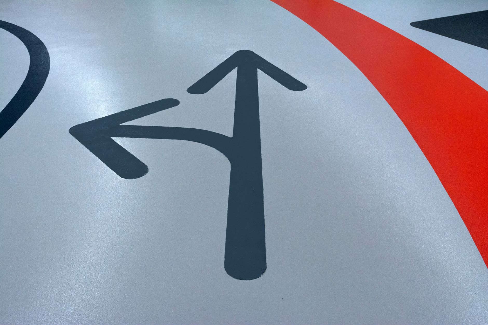
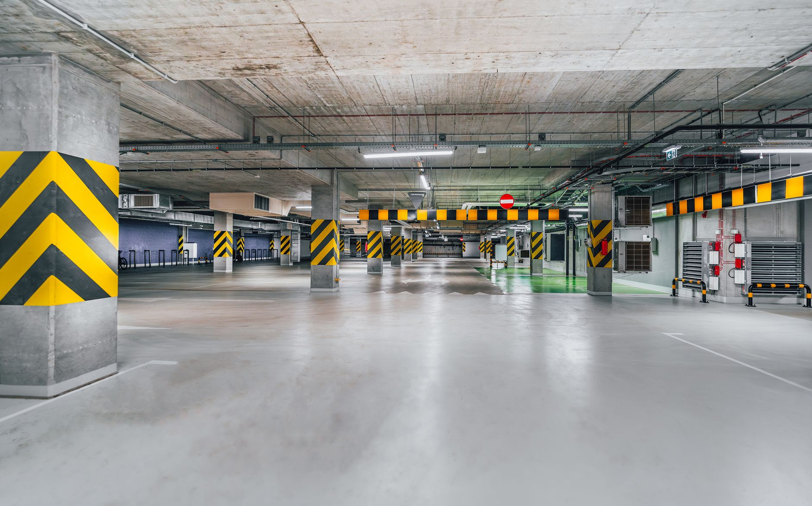
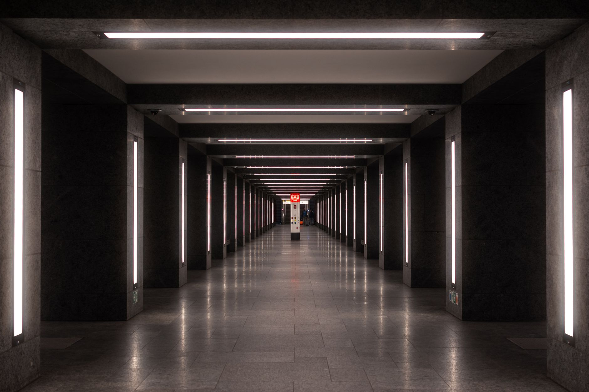
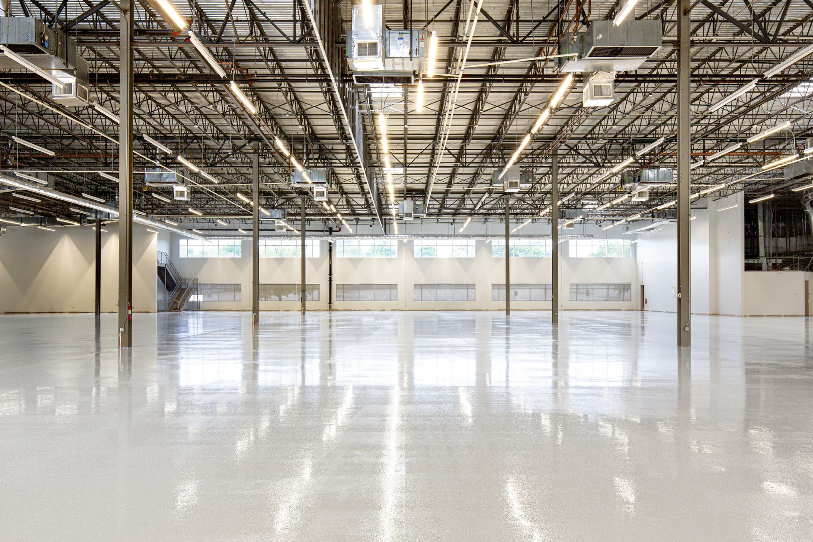

A
Pulido de hormigón
Desbaste con diamante, llaneado con alisadora de doble rotor y pulido progresivo. Sacamos la lechada floja, nivelamos la superficie y dejamos el hormigón cerrado: deja de largar polvo y deja de absorber aceite.
Pulimos, pintamos y sellamos pisos de hormigón para depósitos, garages, talleres y showrooms. Superficie pareja, sin polvo, que se limpia en la mitad de tiempo y aguanta autoelevador.
No subcontratamos. El mismo equipo que muele el hormigón es el que aplica la pintura y firma la demarcación.
Desbaste con diamante, llaneado con alisadora de doble rotor y pulido progresivo. Sacamos la lechada floja, nivelamos la superficie y dejamos el hormigón cerrado: deja de largar polvo y deja de absorber aceite.
Epoxi bicomponente y poliuretánico sobre hormigón preparado mecánicamente. Resiste nafta, aceite, ácido de batería y lavado con hidrolavadora.
Endurecedor de superficie y sellador de litio para pisos que ya están sanos pero se pulverizan. Es la opción rápida cuando no se puede parar la operación.
Sendas peatonales, límites de estiba, cebrados, números de dársena y flechas de circulación con pintura de tránsito de dos componentes y molde recortado — no cinta pegada.
Elegí el acabado antes de que lleguemos
Movés la perilla y ves cómo termina tu piso en cada nivel de pulido: cuánto refleja, con qué grano se llega, para qué sirve y qué mantenimiento pide. Es la misma escala que usamos en obra.
Hormigón cerrado, sin brillo. Es el piso de trabajo puro: no encandila, no marca las ruedas y perdona el tránsito de autoelevador todo el día.
Los valores GU son de referencia: el brillo final depende del estado y la edad del hormigón. Lo medimos en obra antes de arrancar.
Cinco pasos, fecha cerrada y un solo responsable en el teléfono. Trabajamos por sectores para que la planta no se frene.
Vamos, medimos, revisamos dureza y fisuras, y te decimos qué se puede hacer y qué no. Sin cargo dentro de la provincia.
Detalle por m², tratamiento, plazo y qué necesitamos de tu lado: luz, agua y el sector libre. Sin sorpresas después.
Desbaste mecánico, reparación de juntas y fisuras con mortero epoxi, aspirado industrial. Acá se define el 80% del resultado.
Pasadas de grano progresivo, o imprimación más capas de epoxi con los tiempos de curado respetados. Sector por sector.
Sellador, demarcación si va, y hoja de mantenimiento con qué producto usar y cuál no tocar nunca.
Cada destino pide una terminación distinta. Estos son los acabados que más nos piden.







Armá el mensaje en 20 segundos
Completá los tres datos y se arma solo el WhatsApp con todo lo que necesitamos para presupuestar sin ir a ciegas.
Con esos dos datos ya te decimos si va pulido, epoxi o sellado.
Un pulido rinde entre 80 y 150 m² por día según el estado del hormigón. Sobre pulido y sellado se camina a las pocas horas y entra tránsito pesado al día siguiente. En epoxi hay que respetar el curado: se camina a las 24 h y se carga a las 72 h.
No. Trabajamos por sectores: liberás una franja, la hacemos, y cuando está lista pasás la mercadería. Es la forma normal de trabajar en plantas que no pueden parar.
El desbaste se hace con aspiración conectada a la máquina, así que el polvo queda contenido. Igual sectorizamos con film para que no vuele a las áreas vecinas.
Casi siempre sí, pero la mancha de aceite penetrada no se va con el pulido: se saca el material contaminado o se resuelve con un epoxi que la tape. En la visita lo definimos mirando el piso, no por foto.
El pulido trabaja el propio hormigón: no se despega nunca y es más barato de mantener. El epoxi es una capa nueva encima: permite color, sella contra químicos y tapa un piso feo, pero pide un hormigón sano y se repinta con los años.
Cubrimos toda la provincia. Fuera de la provincia lo vemos según el tamaño de la obra: escribinos y te decimos enseguida si nos da.